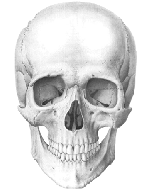
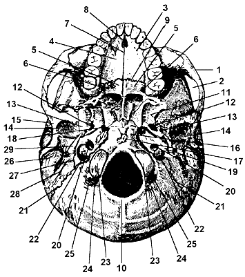

Глава 5. Строение черепа человека
Общие сведения о строении черепа человека.
Скелет головы составляют парные и непарные кости, которые в совокупности носят название черепа, cranium. Одни из костей черепа являются губчатыми, другие – смешанными.
В черепе выделяют два отдела, различные по развитию и функциям. Мозговой отдел образует полость для головного мозга (ГМ) и некоторых органов чувств. В нем выделяют свод и основание. Лицевой отдел является вместилищем большей части органов чувств и начальных отделов дыхательной и пищеварительной систем.
Мозговой отдел состоит из 8 костей: парных – теменной и височной, непарных – затылочной, лобной, клиновидной и решетчатой. К лицевому отделу черепа относится 15 костей, из которых нижняя челюсть, сошник и подъязычная кости являются непарными, а верхняя челюсть, небная, слезная и нижняя носовая раковина – парными.

Рис 5.1 Строение черепа человека
Кости черепа отличаются рядом особенностей. В костях мозгового отдела, составляющих свод черепа, различают наружную и внутреннюю пластинки компактного вещества и расположенное между ними губчатое вещество, называемое диплоэ (diploe). Оно пронизано диплоическими каналами, содержащими диплоические вены. Внутренняя пластинка костей свода тонкая, хрупкая и ломкая. При травмах черепа перелом ее встречается чаще, чем перелом наружной пластинки. Кости разделены швами, прочно удерживающими их вместе в зрелом возрасте. В некоторых местах череп имеет выпускники, emissaria, – отверстия, служащие для прохождения вен. Некоторые кости черепа: лобная, решетчатая, клиновидная, височная и верхняя челюсть содержат полости, заполненные воздухом. Эти кости называются воздухоносными.
Свод черепа. Свод в передней части имеет выпуклость – лоб (frons), на котором имеются возвышения: лобный бугор (tuber frontale), надбровная дуга (arcus superciliaris), между которыми располагается углубление – глабелла (glabella). С боков свод черепа замыкают теменные кости, чешуя височной кости и большие крылья клиновидной кости. То, что лежит выше этой условной линии, относится к своду, а что ниже – к основанию черепа.
Строение основания черепа
В основании черепа выделяют два отдела: наружное основание черепа (basis cranii externa) и внутреннее основание черепа (basis cranii interna).
Наружное основание черепа в переднем отделе на 1/3 прикрыто лицевым черепом, и только задние и средние отделы образованы костями мозгового черепа.

Рис 5.2 Наружное основание черепа: 1) скуловая дуга; 2)подвисочная ямка; 3) альвеолярные отростки; 4) верхней челюст; 5) верхней челюсти вместе с горизонтальной пластинкой; 6) часть пирамидального отростка небной кости; 7) большое и малое небные отверстия; 8) резцовое отверстие; 9) поперечный небный шов; 10) передний края большого отверстия; 11) крыловидные отростки; 12) овальное отверстие; 13) остистое отверстие; 14) нижнечелюстная ямка; 15) суставной бугорок; 16) основная часть затылочной кости; 17) глоточный бугорок; 18) рваное отверстие; 19) каменистая часть височной кости; 20) наружное сонное отверстие; 21) барабанная часть височной кости; 22) яремное отверстие; 23) затылочный мыщелок; 24) мыщелковая ямка; 25) мыщелковый канал.
Основание черепа неровное, имеет большое количество отверстий, через которые проходят сосуды и нервы. В заднем отделе располагается затылочная кость, по средней линии которой видны наружный затылочный выступ и спускающийся вниз наружный затылочный гребень. Кпереди от чешуи затылочной кости лежит большое (затылочное) отверстие, ограниченное с боков затылочными мыщелками, а спереди – телом клиновидной кости.
У основания сосцевидного отростка имеется foramen mastoideum, относящееся к венозным выпускникам. Медиально и кпереди от сосцевидного отростка находится шилососцевидное отверстие, а спереди от него – шиловидный отросток.
У верхушки пирамиды располагается рваное отверстие (foramen lacerum), кпереди от которого в основании крыловидных отростков проходит крыловидный канал (canalis pterygoideus), открывающийся в крыловидно–нёбную ямку. В основании больших крыльев клиновидной кости располагаются foramen ovale, a несколько кзади foramen spinosum. Кнаружи от пирамиды височной кости располагается нижнечелюстная ямка, а кпереди – суставной бугорок.
Внутреннее основание черепа представляет неровную вогнутую поверхность, в которой различают три черепные ямки: переднюю, среднюю и заднюю.
Передняя черепная ямка (fossa cranii anterior) образована носовыми и глазничными частями лобной кости, малыми крыльями клиновидной кости, решетчатой пластинкой решетчатой кости.
Средняя черепная ямка (fossa cranii media) образована клиновидной и височной костями. У верхушки пирамиды, рядом с внутренним отверстием сонного канала, имеется рваное отверстие. На передней поверхности находится тройничное вдавление: здесь под твердой оболочкой ГМ лежит тройничный узел. Кзади на передней поверхности пирамиды проходят борозды и расщелины каналов малого и большого каменистых нервов, расположены полукружное возвышение и крыша барабанной полости.
В основании больших крыльев спереди назад имеется три отверстия: круглое, овальное и остистое. Через круглое отверстие в крыловидно–нёбную ямку проходит верхнечелюстной нерв, через овальное в подвисочную ямку – нижнечелюстной нерв, а через остистое в среднюю черепную ямку – средняя менингеальная артерия. В переднебоковых отделах средней черепной ямки между малыми и большими крыльями располагается верхняя глазничная щель (fissura orbitalis superior), через которую проходят III, IV, VI черепные нервы и глазной нерв.
Задняя черепная ямка (fossia cranii posterior) образована затылочной костью, задней поверхностью пирамиды, телом клиновидной кости и частично теменной костью.
На границе мозгового и лицевого черепа имеются очень важные в практическом отношении ямки: височная, подвисочная и крыловидно–нёбная.
Височная ямка (fossa temporalis) ограничена сверху и сзади височной линией, снаружи – скуловой дугой, снизу – подвисочным гребнем большого крыла клиновидной кости, спереди – скуловой костью. В височной ямке лежит височная мышца.
Подвисочная ямка (fossa infratemporalis) образована сверху большим крылом клиновидной кости и чешуей височной, медиально-латеральной пластинкой крыловидного отростка, спереди – подвисочной поверхностью верхней челюсти и частично височной поверхностью скуловой кости, латерально – скуловой дугой и ветвью нижней челюсти. Подвисочная ямка через нижнюю глазничную щель сообщается с глазницей, через fissura pterygomaxillaris – с крыловидно – нёбной ямкой и через остистое и овальное отверстия – со средней черепной ямкой.
Крыловидно–нёбная ямка (fossa pterygopalatina) ограничена спереди tuber maxillae, медиально-перпендикулярной пластинкой нёбной кости, сзади – крыловидным отростком, сверху – верхнечелюстной поверхностью большого крыла клиновидной кости. Она снаружи через крыловидно–верхнечелюстную щель открывается в подвисочную ямку. Крыловидно-нёбная ямка через крыловидный канал сообщается с рваным отверстием, через круглое отверстие – со средней черепной ямкой, через клиновидно-нёбное отверстие – с полостью носа, через нижнеглазничную щель – с глазницей, через большой нёбный канал – с полостью рта.
Строение лицевого отдела черепа
В лицевой череп входят образования – вместилища для очень важных органов.
Глазница (orbita) – парное образование, имеет форму четырехсторонней пирамиды, основание – вход в глазницу (aditus orbitalis) обращено кнаружи, вершина – внутрь и кзади. В глазнице располагаются глазное яблоко, слезная железа и жировая клетчатка. В глазнице имеется большое количество отверстий и щелей, через которые проходят сосуды и нервы: зрительный канал и верхняя глазничная щель открываются в среднюю черепную ямку, нижнеглазничная щель – в подвисочную и крыловидно–нёбную ямки. На нижней поверхности глазницы лежит подглазничная борозда, которая переходит в канал и открывается одноименными отверстием. Кости лицевого черепа составляют костную основу стенок полостей носа, рта, околоносовых пазух.
Полость носа (cavum nasi) располагается в центре лицевого черепа. Вверху она ограничена передней черепной ямкой, снизу – костным нёбом, с боков – носовой поверхностью верхней челюсти и медиальной стенкой глазницы. По средней плоскости полость носа разделена костной перегородкой носа (septum nasi osseum) на две половины. Полость носа спереди открывается грушевидной апертурой (apertura piriformis), а сзади парными отверстиями – хоанами (choanae).
Верхнюю стенку, или крышу полости носа, образуют внутренняя поверхность носовых костей, носовая часть лобной кости, решетчатая пластинка решетчатой кости, и тело клиновидной кости. Нижнюю стенку, или дно полости носа, формирует верхняя поверхность костного нёба. Латеральная стенка полости носа устроена более сложно. От боковой стенки отходят три носовые раковины: верхняя, средняя и нижняя (conchae nasales superior, medius et inferior). Первые две относятся к лабиринту решетчатой кости, нижняя является самостоятельной костью. Между раковинами проходят три носовых хода: верхний, средний и нижний (meatus nasi superior, medius et inferior).
Полость рта (cavum oris) ограничена спереди и с боков альвеолярными отростками челюстей и зубами, сверху – костным нёбом (palatum osseum), состоящим из нёбных отростков верхней челюсти и горизонтальных пластинок нёбных костей. В передних отделах твердого нёба имеется резцовое отверстие (foramen incisivum), в задних отделах – большое и малые нёбные отверстия (foramina palatinae majus et minora). В центре костного нёба, по бокам от срединного нёбного шва, расположено возвышение, называемое нёбным валиком ( torus palatinus).